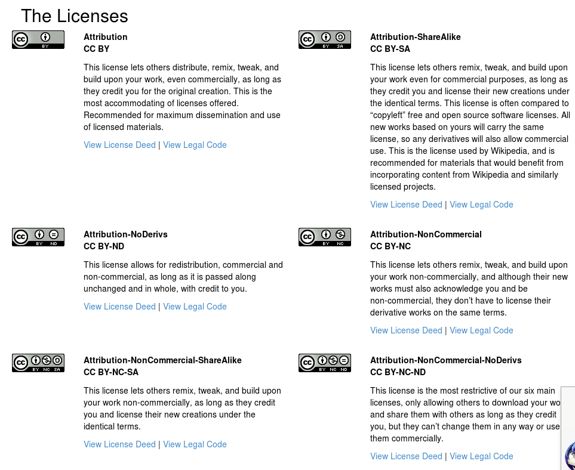
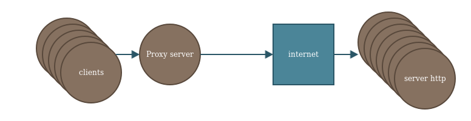
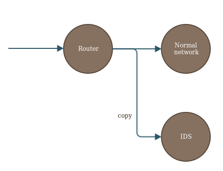

Time management, open source, etc...
Speaker : Benoit Tellier
Retrieve this presentation online : https://rawgit.com/Open-Up/openup02_14/master/presentation/index.html
And on GitHub
Objectives
- Better knowledge of Free software
- Time management in distributed systems
- Sum up semester 2
What does Open source mean
Access to the source code
What does "free" mean
- Read the source code
- Modify it
- Redistribute it (and my modifications)
Free software advantages
- Visibility for developers
- Fame for the company
- Knowledge, resource sharing with other actors
- Governance
- Adapt to my needs
- Less expansive
- ...
Making money with free software
- Sell instalation
- Sell customization
- Sell support
- Not on your core product
- ...
Licenses
Creative commons

Wikipedia, ...
Apache
- License in each file
- Always keep initial license
- Read, execute
- No linking restriction
- Preserve trademark
Apache2, Java ...
MIT license
- ...
- Right to sub license
RoR, Node.js ...
Pay attention to licenses

Time in distributed systems
NTP client
apt-get install ntpdate -Rntpq -pNTP server
apt-get install ntp ntpdatedriftfile /var/lib/ntp/ntp.drift
statistics loopstats peerstats clockstats
filegen loopstats file loopstats type day enable
filegen peerstats file peerstats type day enable
filegen clockstats file clockstats type day enable
server ntp1.int-evry.fr iburst
server ntp2.int-evry.fr iburst
server ntp1.minet.net iburst
server 127.127.1.0
restrict ::1
restrict 127.0.0.1
restrict 192.168.0.0 mask 255.255.0.0
restrict 157.159.0.0 mask 255.255.0.0
#broadcast 192.168.123.255
#broadcastclientntpdate -u ntp1.int-evry.frWhat to remember from semester 2
Protocols
- FTP
- SSH
- TELNET
- HTTP
- HTTPS
- IMAP
- POP3
- SMTP
- JMAP
- LMTP
Protocols
- NFS
- CARP
- DHCP
- SYSLOG
- DNS
- ...
Notions
- Replication
- Virtualization
- Load balancing
- Web infrastructure
- Mail infrastructure
- Monitoring
- Mog management
Servers we installed
- APACHE2
- NGINX
- Bind9
- DHCPD
- NFS kernel server
- Samba
- Postfix
- Cyrus
- Zabbix
- ELK
- HAProxy
Kahout !
What we could have seen
Proxy servers
Proxy servers
- Cache
- Access control
- Log visited pages
- HTTP access without internet access
Squid 3
FTP servers
ProFTPd
Security considerations, SFTP
A journey over security
- fail2ban
- Snort
- OpenVPN (TUN / TAP)
IDS servers
What else can you install ?
- IRC
- Web services
- Music streaming services
- Gitlab
- ...